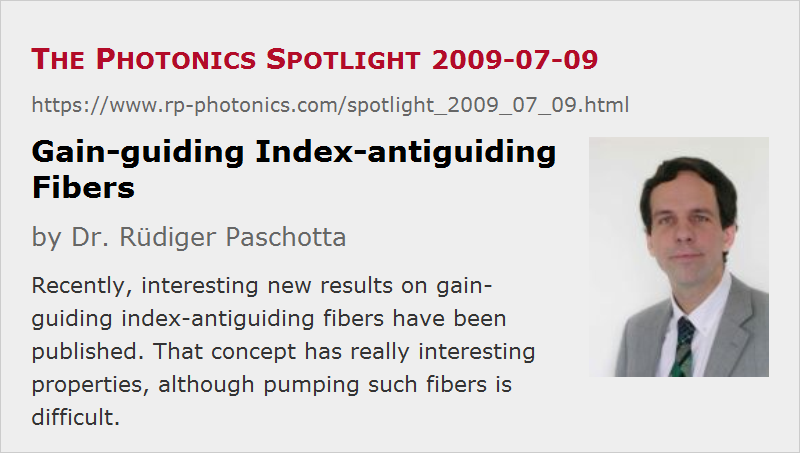

Gain-guiding Index-antiguiding Fibers
Posted on 2009-07-09 as a part of the Photonics Spotlight (available as e-mail newsletter!)
Permanent link: https://www.rp-photonics.com/spotlight_2009_07_09.html
Author: Dr. Rüdiger Paschotta, RP Photonics Consulting GmbH
Abstract: Recently, interesting new results on gain-guiding index-antiguiding fibers have been published. That concept has really interesting properties, although pumping such fibers is difficult.

Ref.: V. Sudesh et al., “Diode-pumped 200 μm diameter core, gain-guided, index-antiguided single mode fiber laser”, Appl. Phys. B 90, 369 (2008); encyclopedia article on large mode area fibers and references therein
A couple of years ago, famous Anthony E. Siegman has proposed an interesting new concept for an active fiber, which allows for robust single-mode operation with an effective mode area well above that for any other of the many investigated concepts (to my best knowledge). It took quite a while, but last year a collaboration of that group and others managed to demonstrate the first diode-pumped fiber laser based on the concept, after earlier experiments with flash lamp pumping.
The principle idea is really nice. Naturally, the fiber would be anti-guiding, as the fiber core has a lower refractive index than the cladding. When the fiber is pumped sufficiently strongly, however, gain guiding stabilizes a "leaky mode", which constantly loses some power to the cladding during propagation. However, when the core size is increased (which one wants anyway), that loss decreases rapidly and is thus not really detrimental.
The challenge is essentially that of pumping such a fiber. Note that it cannot guide the pump light. On the contrary, the index structure even tends to expel the pump light from the core. For that reason, the first fibers operated with that guiding principle were side-pumped with flash lamps, of course with a terribly low efficiency, just for demonstration purposes. The diode-pumped laser demonstrated laser year still has a very low efficiency, exactly because of the difficulty of efficient pumping, whereas the output beam quality is high, as expected.
The researchers hope to develop improved pumping schemes to fix the efficiency problem, perhaps by going back to side pumping. That may not be too bad for very large-core fibers, although it probably requires the use of short and highly doped fibers, leading to problems with thermal loading. If these problems are overcome in some way, that concept may allow e.g. for amplifiers with pulse energies well above those of any other fiber devices.
This article is a posting of the Photonics Spotlight, authored by Dr. Rüdiger Paschotta. You may link to this page and cite it, because its location is permanent. See also the RP Photonics Encyclopedia.
Note that you can also receive the articles in the form of a newsletter or with an RSS feed.
Questions and Comments from Users
Here you can submit questions and comments. As far as they get accepted by the author, they will appear above this paragraph together with the author’s answer. The author will decide on acceptance based on certain criteria. Essentially, the issue must be of sufficiently broad interest.
Please do not enter personal data here; we would otherwise delete it soon. (See also our privacy declaration.) If you wish to receive personal feedback or consultancy from the author, please contact him e.g. via e-mail.
By submitting the information, you give your consent to the potential publication of your inputs on our website according to our rules. (If you later retract your consent, we will delete those inputs.) As your inputs are first reviewed by the author, they may be published with some delay.
|  |
If you like this page, please share the link with your friends and colleagues, e.g. via social media:
These sharing buttons are implemented in a privacy-friendly way!